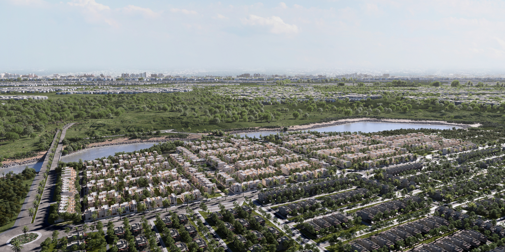

Scroll to enter


A private quarter, woven into the land
Choose a residence to see where it rests.
Stone, shaped by light
Clean volumes and layered textures, composed to catch the sun.
Detail you can feel
Ribbed stone and perforated bronze screens, crafted to be seen up close.
An arrival,
framed in green
Sculpted planting and a stepping-stone path lead you to the door.
Made for gathering
Living and dining flow into one another, finished in rich, tactile materials.
Above it all
Evenings under an open sky, with the land stretching beyond.
An open court, day into evening
Grass and stone between the walls of home, glowing softly as night falls.

Every room, considered
Three levels, from garden to sky.
01Ground floor
02First floor
03Roof terrace
Plans unveiling soon
Ewan Sedra
A home designed to be lived in slowly.